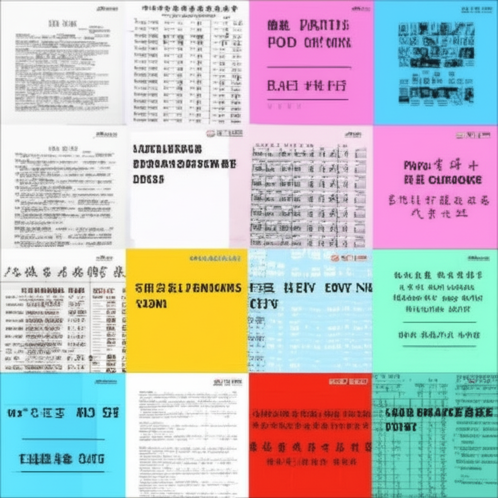

新聞摘要分析
引言
這份新聞摘要涵蓋了廣泛的主題，從時事新聞、健康飲食、體育賽事到經濟趨勢，展現了社會各個層面的資訊。我們將分析這些新聞條目，歸納出主要趨勢，並對部分議題進行深入探討。
主體內容
第一點：健康與飲食
摘要中多次出現與健康和飲食相關的新聞，例如：
- 呷健康營養師教您端午放「粽」一下： 強調端午節食用粽子時需注意熱量控制和健康飲食。
- 健康醫療網- 最關心大眾健康的醫藥網路媒體： 提供專業的醫藥健康知識。
- 西藏藏医院体重管理门诊开诊提供“内外结合”藏医特色健康服务： 表明體重管理日益受到重視，甚至運用了藏醫的特色療法。
- 明天下午領空運櫻桃 ^_^ 想訂購的來3.0留言： 顯示對於高品質食物的需求。
這反映了現代社會對健康意識的提高，以及對飲食選擇的關注。人們不僅關心如何避免疾病，也越來越注重如何透過飲食來維持健康的生活方式。
第二點：時事與社會議題
摘要中也包含了一些重要的時事與社會議題：
- Yahoo新聞： 提供最新的焦點及熱門新聞，是獲取資訊的重要來源。
- 【完整公開】LIVE 國台辦:兩岸機制停擺陸委會立院最新詢答- YouTube： 涉及兩岸關係的議題，屬於政治層面的討論。
- 5月我國消費信心創一年新低學者曝台廠「利潤被吃掉」 ：關稅談到 ...： 顯示經濟環境的挑戰，消費者信心指數下降可能反映了對未來經濟前景的擔憂。
這些新聞條目提醒我們關注社會動態，並思考不同議題背後的影響。
第三點：體育賽事與名人動態
- NBA／皮爾斯認為唐西奇弱點不在體重點湖人防守問題： 聚焦體育賽事和球星的表現，體重管理也被提及，可見大眾對運動員健康狀況的關注。
體育賽事和名人動態往往能引起廣泛的討論，也反映了社會大眾的興趣和關注點。
結論
從上述分析可以看出，這份新聞摘要涵蓋了健康、飲食、時事、經濟、體育等多個領域，反映了社會的多樣性和複雜性。 健康飲食和體重管理是普遍關注的議題，而經濟趨勢和時事新聞則影響著人們的生活和決策。 深入分析這些新聞，有助於我們更好地了解社會的脈動，並做出更明智的判斷。